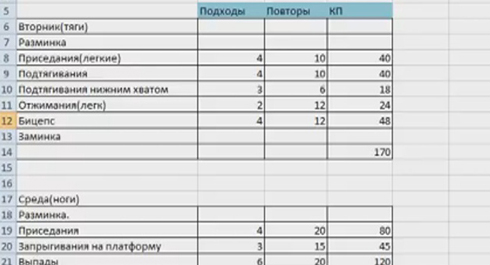

Всю эту неделю мы с вами говорили о том, как научиться самостоятельно составлять программы тренировок. Но все наши разговоры носили в большей степени теоретический, нежели практический характер. Пришло время это исправить, и сегодня у нас будет практикум по составлению программы тренировок для себя любимых!
Итак, пошаговая инструкция:
Шаг №1: Определитесь с целью тренировок
Условно можно разделить подготовку на ОФП и СФП. Это глобальная цель. Конкретная цель может выражаться в количестве повторений в упражнениях, количестве подходов, времени тренировки и т.д. Для новичков разумно использовать только ОФП, для среднего и выше уровня также обязательна офп и, в зависимости от целей, может включаться СФП.
Шаг №2: Спланируйте режим дня
Для достижения результата необходим комплексный подход. Что касается эффективных тренировок, должен выполняться ряд условий:
Запас сил. На тренировку нужно приходить отдохнувшим и сытым. При отсутствии энергии ваши возможности проделать работу снижаются. Крайние варианты, утром натощак и вечером после тяжелого дня, нежелательны. Если режим жизни не позволяет полноценно выкладываться, нужно скорректировать цели в меньшую сторону. Также самую тяжелую тренировку можно поставить в выходной, проводя легкие тренировки прямо на работе. Когда один наш друг работал на складе, то подтягивался прямо на стеллажах. Каждый час по подходу. И он не один такой там был.
Спланировать режим питания до начала тренировочного периода. Обеспечить возможность приема пищи на работе, заранее заготавливая контейнеры. Это крайне важное условие, без которого речи о тренировках быть не может.
Обеспечить достаточный отдых и сон. С этим всё понятно вроде.
Шаг №3. Обозначить структуру тренинга и выбрать упражнения
Определить свой уровень. Исходя из этого выбрать режим тренировок. Для новичков (крайне условно — до 8 подтягиваний) предпочтительна тренировка всего тела за 1 занятие. Таких тренировок 3-5 в неделю. Низкий уровень не позволяет нагрузить как следует 1-2 мышечные группы, поэтому занятия по сплиту нецелесообразны. При среднем уровне можно переходить на сплит систему. При нормальных показателях, за 1 тренировку удается проработать 2 мышечные группы (или 2-3 упражнения), нагружая их больше. Такой метод более эффективен. В таком случае восстановление идет дольше и достаточно 2 тренировки в неделю на группу мышц.
Выбрать упражнения исходя из целей. Если речь об ОФП (а именно этим следует заниматься после СОТКИ), то упражнения преимущественно базовые. Также необходимо нагружать все мышечные группы равномерно, то есть нужно поддерживать баланс в упражнениях. 2-3 базовых упражнения на группу мышц оптимальный вариант. При этом все сложные базовые упражнения идут в начале тренировки, ведь именно на них необходимо направить основные силы.
Каждая тренировка начинается с разминки с акцентом на те суставы, которые будут активно работать. В конце тренировки — заминка. Всё как во время СОТКИ.

Шаг №4: Спланировать тренировку на 1 неделю
Распределить нагрузку нужно равномерно на все упражнения и соотнести разные упражнения по сложности для баланса нагрузки. Также необходимо посчитать общий объем нагрузки за неделю для того, чтобы реализовать прогрессию нагрузки.
Шаг №5: Выполнить программу
Шаг №6: Проанализировать
Сочетание упражнений, время тренировки и остальные параметры. Если все ок, то спланировать тренировки на 2-3 недели. Увеличивать нагрузку по объему линейно или с использованием циклирования (график на скриншоте):